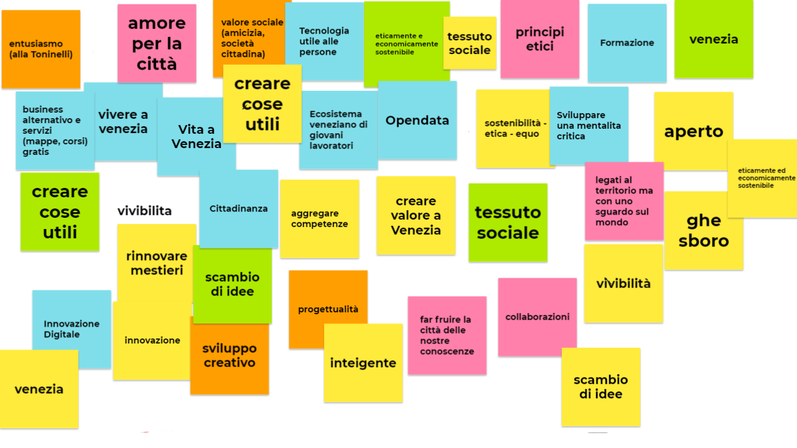

Stiamo lavorando per riuscire a definire chiaramente la nostra visione e spiegare in maniera concisa chi siamo e cosa vogliamo fare. Come sapete, spiegare in maniera chiara concetti astratti e tutto fuorche semplice. Per ora vi lasciamo un'impressione dalla nostra ultima sessione di brainstorming.

A volte un'immagine vale più di mille parole.
Anche qui il compito non e semplice, ma ci sembra sensato spiegare un po' i nostri valori per cui abbiamo deciso di unirci e di cimentarci in questo progetto.
- Entusiasmo: la chiave per lavorare insieme e avere voglia di fare qualcosa, indipendentemente dal risultato o da un ritorno economico. Requisito di base spesso sottovalutato: avere voglia di fare.
- Amore per la citta: indipendentemente se veneziani di origine, di adozione o semplicemente amanti della citta, ci accomuna un desiderio comune di salvaguardare questo tesoro.
- Sostenibilita: ci interessa creare un modello sostenibile dal punto di vista ecologico, sociale, democratico ed economico. Anche a scapito di qualche perdita nel profitto.
- Apertura: sempre disponibili a cambiare la propria idea, ci impegnamo nel creare una struttura democratica senza gerarchie per quanto riguarda il nostro gruppo, e cerchiamo dove possibile di costruire un'infrastruttura (digitale e non) che si basi su principi di apertura e scambio di idee.
- Etica: cerchiamo di accordarci e mantenere i principi di etica basici per la collaborazione e il vivere insieme. Siamo sempre pronti a criticare, ma anche a discutere e riconsiderare.
- Innovazione: l'obiettivo è di riuscire a migliorare la situazione esistente, ricordando che a volte fare meno può voler dire ottenere di più. La tecnologia dev'essere al servizio delle persone e non viceversa.
- Tessuto sociale: vorremmo creare valore, aggregare competenze e cercare di avere un impatto positivo anche nel lato sociale.